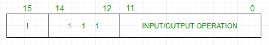

The basic computer has 16 bit instruction register (IR) which can denote either memory reference or register reference or input-output instruction.
- Memory Reference – These instructions refer to memory address as an operand. The other operand is always accumulator. Specifies 12 bit address, 3 bit opcode (other than 111) and 1 bit addressing mode for direct and indirect addressing.

Example –
IR register contains = 0001XXXXXXXXXXXX, i.e. ADD after fetching and decoding of instruction we find out that it is a memory reference instruction for ADD operation.Hence, DR <- M[AR] AC <- AC+ DR, SC <- 0
- Register Reference – These instructions perform operations on registers rather than memory addresses. The IR(14-12) is 111 (differentiates it from memory reference) and IR(15) is 0 (differentiates it from input/output instructions). The rest 12 bits specify register operation.

Example –
IR register contains = 0111001000000000, i.e. CMA after fetch and decode cycle we find out that it is a register reference instruction for complement accumulator.Hence, AC <- ~AC
- Input/Output – These instructions are for communication between computer and outside environment. The IR(14-12) is 111 (differentiates it from memory reference) and IR(15) is 1 (differentiates it from register reference instructions). The rest 12 bits specify I/O operation.

Example –
IR register contains = 1111100000000000, i.e. INP after fetch and decode cycle we find out that it is an input/output instruction for inputing character. Hence, INPUT character from peripheral device.
The set of instructions incorporated in16 bit IR register are:
- Arithmetic, logical and shift instructions (and, add, complement, circulate left, right, etc)
- To move information to and from memory (store the accumulator, load the accumulator)
- Program control instructions with status conditions (branch, skip)
- Input output instructions (input character, output character)
| Symbol | Hexadecimal Code | Description | |
|---|---|---|---|
| AND | 0xxx | 8xxx | And memory word to AC |
| ADD | 1xxx | 9xxx | Add memory word to AC |
| LDA | 2xxx | Axxx | Load memory word to AC |
| STA | 3xxx | Bxxx | Store AC content in memory |
| BUN | 4xxx | Cxxx | Branch Unconditionally |
| BSA | 5xxx | Dxxx | Add memory word to AC |
| ISZ | 6xxx | Exxx | Increment and skip if 0 |
| CLA | 7800 | Clear AC | |
| CLE | 7400 | Clear E(overflow bit) | |
| CMA | 7200 | Complement AC | |
| CME | 7100 | Complement E | |
| CIR | 7080 | Circulate right AC and E | |
| CIL | 7040 | Circulate left AC and E | |
| INC | 7020 | Increment AC | |
| SPA | 7010 | Skip next instruction if AC>0 | |
| SNA | 7008 | Skip next instruction if AC<0 | |
| SZA | 7004 | Skip next instruction if AC>0 | |
| SE | 7002 | Skip next instruction if E=0 | |
| HLT | 7001 | Halt computer | |
| INP | F800 | Input character to AC | |
| OUT | F400 | Output character from AC | |
| SKI | F200 | Skip on input flag | |
| SKO | F100 | Skip on output flag | |
| IEN | F080 | Interrupt On | |